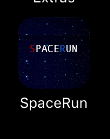
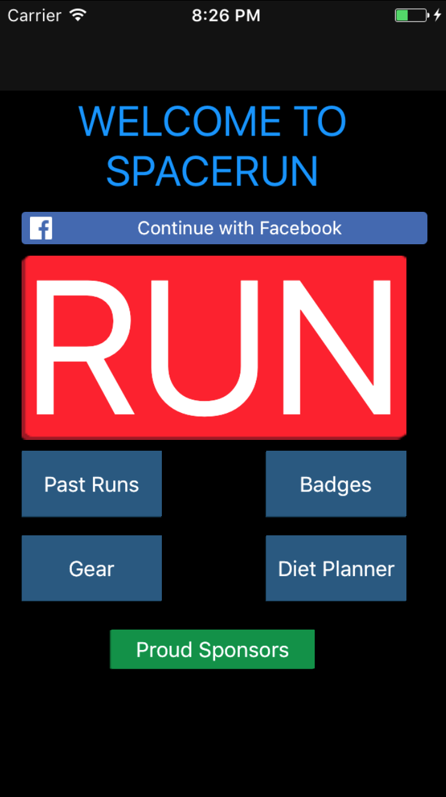

April 2017
SpaceRun
 
About This Project
I chose to do a mobile application in particular an iOS application, this is because during my summer break of 2016 I was practicing my app development skills both on Android and iOS. I chose to do an iOS because of 2 components which were, I had more practice with xCode/languages and I owned an iPhone!
I decicided to do an application that tracks the workouts of runners as fitness is something that I enjoy. I carried out many research gathering techniques like forums, questionnaires and focus groups. Going along to a Nike running club event in King Cross helped me begin my design also having a prototype of the interface helped the potietial end users understand what it could look like
Things I used;
MacBook, iPhone, xCode, Objective C, Swift, MapKit, Google Maps API, Facebook SDK, Firebase, Spotify SDK, Photoshop, SurkeyMonkey, Protoio,